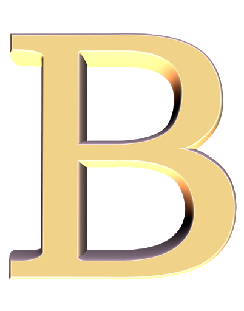

Горы по колено
Макс Корж
Время без забот тихо опустилось за горизонт
А за ним и новый снежный ком делами накрывает с головой
Слышь! Время без забот - будем вспоминать тебя через год
Из автомобилей радивцо напомнит нам о том, что не сбылось
Знаешь, горы по колено, горы по колено
Горы по колено тем, если держишь шаг
Никакаких потерь, просто наступает время
Время разложить эту жизнь по местам
Волны по колено, волны по колено
Могут и свалить, ой, держи удар!
Никаких потерь, просто наступает время
Время разложить нашу жизнь по местам
Время без забот, вспоминай июль, 13-ый год
Дикая поездка, южный берег за горб
Мы по серпантину нарезаем, как кони
Ты слышишь?!
Время без забот
Среди белых скал наш секретный пароль
И в эту Одиссею прыгнуть прямо на дно
Со скалы надутой набираю разгон, и
Волны по колени, волны по колени
Волны по колени, закрутили - упал
Никакаких потерь, просто наступает время
Время разложить эту жизнь по местам
олны по колени, волны по колени
Могут и свалить, ой, держи удар!
Никаких потерь, просто наступает время
Время разложить нашу жизнь по местам
Время без забот
Ты не переживай, не переживай только
Что-то упустили, наверстаем потом
Там, где не пройти - пролетим орлом
Ты слышишь?
Время без забот...
Знаешь, ведь бессмысленны споры кругом!
И хоть пока бьёт пар сквозь загнутый капот
Я, братик, уверен скоро нам повезёт, ведь
Горы по колено, горы по колено
Горы по колено тем, кто держит шаг
И никаких потерь, просто наступает время
Время разложить эту жизнь по местам
Волны по колени, волны по колени
Могут и свалить, ой, держи удар!
Никаких потерь, просто наступает время
Время разложить нашу жизнь по местам